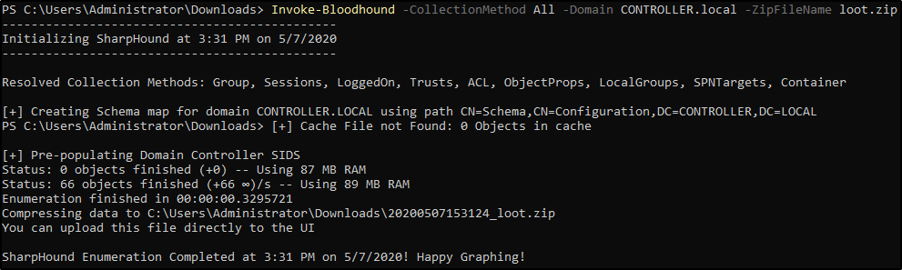
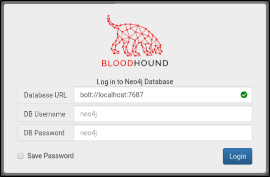
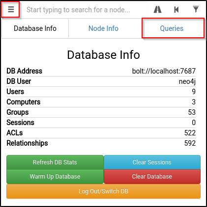
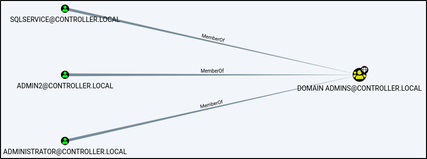
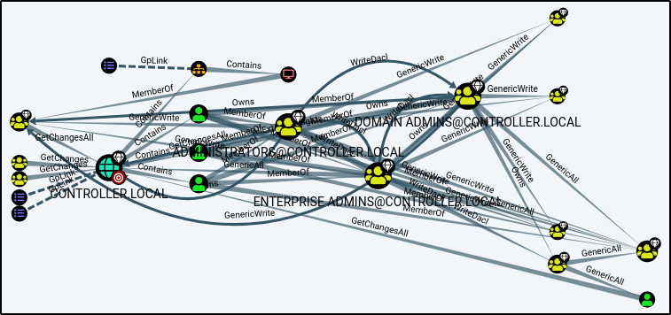

Bloodhound
BloodHound Installation -
1.)
apt-get install bloodhound 2.)
neo4j console - default credentials -> neo4j:neo4j
Getting loot w/ SharpHound -
1.)
powershell -ep bypass same as with PowerView
2.)
. .\Downloads\SharpHound.exe
3.)
Invoke-Bloodhound -CollectionMethod All -Domain CONTROLLER.local -ZipFileName loot.zip 4.) Transfer the loot.zip folder to your Attacker Machine
note: you can use scp to transfer the file if you’re using ssh
Mapping the network w/ BloodHound -
1.)
bloodhound Run this on your attacker machine not the victim machine
2.) Sign In using the same credentials you set with Neo4j
3.) Inside of Bloodhound search for this icon
and import the loot.zip folder
note: On some versions of BloodHound the import button does not work to get around this simply drag and drop the loot.zip folder into Bloodhound to import the .json files
4.) To view the graphed network open the menu and select queries this will give you a list of pre-compiled queries to choose from.
The queries can be as simple as find all domain admins -
Or as complicated as shortest path to high value targets -
There are plenty of queries to choose from and enumerate connections inside of the network
{kind=link}
{kind=link}
{kind=link}
{kind=link}
{kind=link}
{kind=link}